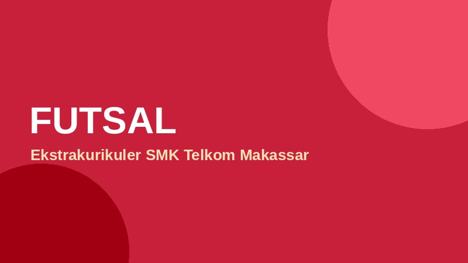

SMK Telkom Makassar
Ekskul Futsal adalah wadah bagi siswa yang gemar sepak bola dalam ruangan. Futsal melatih kerja sama tim, sportivitas, dan kebugaran tubuh.

| Hari | Jam | Tempat | Kegiatan |
|---|---|---|---|
| Rabu | 15.30 - 17.00 | Lapangan sekolah | Latihan teknik |
| Sabtu | 08.00 - 10.00 | GOR terdekat | Latih tanding |
Ikuti kegiatan kami di Instagram Ekskul Futsal.
Dibuat oleh Kelompok 1 - Kelas XI
© 2026